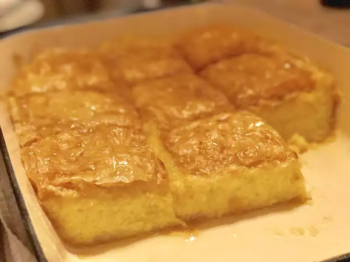

Galaktobureko

Description
This is a recipe that my mom got from a coworker and would make regularly when I was young.
Galaktoboureko is a traditional Greek dessert made with a custard in a crispy phyllo pastry shell.
After all these years it is still a family favorite. I hope that everyone enjoys it as much as we do.
Ingredients
- 6 cups whole milk
- 1 cup semolina flour
- 3 ½ tablespoons cornstarch
- 1 cup white sugar
- ¼ teaspoon salt
- 6 eggs
- ½ cup white sugar
- 1 teaspoon vanilla extract
- ¾ cup butter, melted
- 12 sheets phyllo dough
- 1 cup water
- 1 cup white sugar
Steps
- Pour milk into a large saucepan, and bring to a boil over medium heat. In a medium bowl, whisk together the semolina, cornstarch,
1 cup sugar and salt so there are no cornstarch clumps. When milk comes to a boil, gradually add the semolina mixture, stirring constantly with a wooden spoon.
Cook, stirring constantly until the mixture thickens and comes to a full boil. Remove from heat, and set aside. Keep warm.
- In a large bowl, beat eggs with an electric mixer at high speed. Add 1/2 cup of sugar, and whip until thick and pale, about 10 minutes. Stir in vanilla.
- Fold the whipped eggs into the hot semolina mixture. Partially cover the pan, and set aside to cool.
- Preheat the oven to 350 degrees F (175 degrees C).
- Butter a 9x13 inch baking dish, and layer 7 sheets of phyllo into the pan, brushing each one with butter as you lay it in.
Pour the custard into the pan over the phyllo, and cover with the remaining 5 sheets of phyllo, brushing each sheet with butter as you lay it down.
- Bake for 40 to 45 minutes in the preheated oven, until the top crust is crisp and the custard filling has set. In a small saucepan,
stir together the remaining cup of sugar and water. Bring to a boil. When the Galaktoboureko comes out of the oven,
spoon the hot sugar syrup over the top, particularly the edges. Cool completely before cutting and serving. Store in the refrigerator.